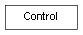

class cymel.ui.control.Control¶

-
class
cymel.ui.control.Control¶ ベースクラス:
objectmel UI の control ラッパークラス。
Methods:
UICMDcall(**kwargs)コントロールのコマンドを呼び出す。 delete()このコントロールを削除する。 exists()UIが存在しているかどうか。 get(name)コントロールの属性値を得る。 getCurrent()カレントペアレントを得る。 getValue()値を得る。 makeWeakCB(name, *args, **kwargs)このインスタンスを参照せずにメソッドを呼び出す関数ラッパーを返す。 name()フルパスUI名を得る。 parent()親UIを得る。 ref()弱参照を得る。 relativeName(base)上位のUIからの相対名を得る。 set(name, value)コントロールの属性値をセットする。 setValue(val)値をセットする。 shortName()パスを含まないUI名を得る。 type()UIタイプ名を得る。 window()UIの属するウィンドウを得る。 Methods Details:
-
UICMD()¶
-
call(**kwargs)¶ コントロールのコマンドを呼び出す。
このメソッドを経ずとも、 オブジェクトを直接呼び出すことも可能。
パラメータ: kwargs -- コマンドのキーワード引数。 戻り値: コマンドの戻り値。
-
delete()¶ このコントロールを削除する。
-
getValue()¶ 値を得る。
UIコントロールごとの違いを吸収する。
-
makeWeakCB(name, *args, **kwargs)¶ このインスタンスを参照せずにメソッドを呼び出す関数ラッパーを返す。
パラメータ: - name (str) -- メソッド名。
- args -- 固定化する引数リスト。
- kwargs -- 固定化するキーワード引数。
-
ref()¶ 弱参照を得る。
-
set(name, value)¶ コントロールの属性値をセットする。
パラメータ: - name (str) -- 属性名（コマンドオプション名）。
- value -- 属性値（型は属性による）。
戻り値: コマンドの戻り値。
-
setValue(val)¶ 値をセットする。
UIコントロールごとの違いを吸収する。
パラメータ: val -- セットする値。
-